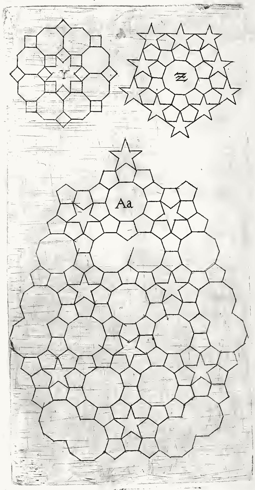

Figure Aa: Pentagonal, Decagonal, and Star-Pentagram Congruence¶
f. 0070 · pp. 52–55(From Proposition XIX, on letters Z and Aa)
Leaving aside now the triangle and square in fitting three together, if we come to the pentagon, two of them can be taken, because joined together they exceed two right angles; and into the remaining place one decagon is congruent—for a decagon is crowned by ten pentagons—yet this form is not continued purely. See the diagram at letter Z, within.
Refer hither therefore the five-pointed star, when there are three pentagons and one ray of a star; because the concave angle of the star also takes in one pentagonal angle, no less than the gap of three pentagons takes in a ray of the star. See at the same letter Z, on the outside.
Yet not even so does continuation succeed to infinity; for unsociable is the kingdom of this sect, which, after admitting a few of its own kind, straightway fortifies itself: behold these two forms in another way also, at letter Aa.
But if you wish to continue it by all means, certain monsters must be admitted: two decagons joined into one another, with two sides cut out in each; and there arises a five-angled series of structure even in infinite continuation, such that in the first and narrowest five-angled series there are five decagons with no intermediate monster; in the second, wider series, linear rows of decagons mediate, and single
f. 0071 · p. 55places are occupied by single couples of two decagons joined together, which a single decagon mediates; in the fourth, whole decagons stand once more at the corners, and two decagons arranged at equal intervals mediate each pair of corners; in the fifth, stars stand with individual extreme rays at each corner, while two whole decagons fill the lines, and in the middle two joinings of decagons. And so consequently, every five-angled form brings something new. The structure is most laborious and most ingenious, to be viewed at the same letter Aa (around the central decagon DEC0, D0).
f. 0078 · p. Plates Y, Z, Aa
